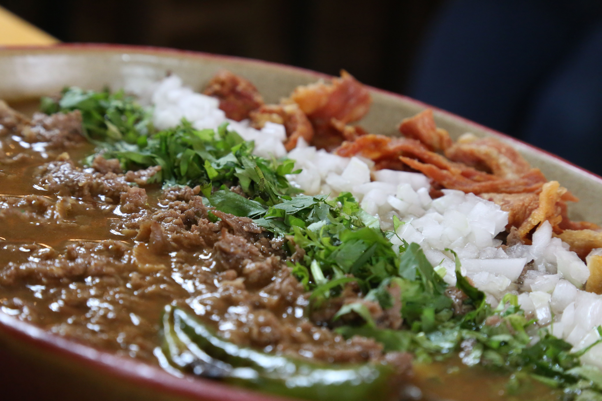

Receta de Carne en su jugo

Rico platillo mexicano que no le gusta a veronica que porque sal
Carnita hecha en su propio jugo, con frijolitos y salsa verde, acompanado de cebollita, cilantro y tocino
Ingredientes
- Carne top sirloin
- frijoles
- salsa verde
- tocino
- cilantro
- cebolla blanca
- limon
Procedimiento
- Cocer carnita en una olla
- cuidar no tirar jugito
- cocer frijoles un dia antes, en olla lenta
- mezclar carne cocida con su jugo y frijioles de la olla
- hervir y agregar salsa verde al gusto
- servir y agregar limon, cebolla y cilantro al gusto